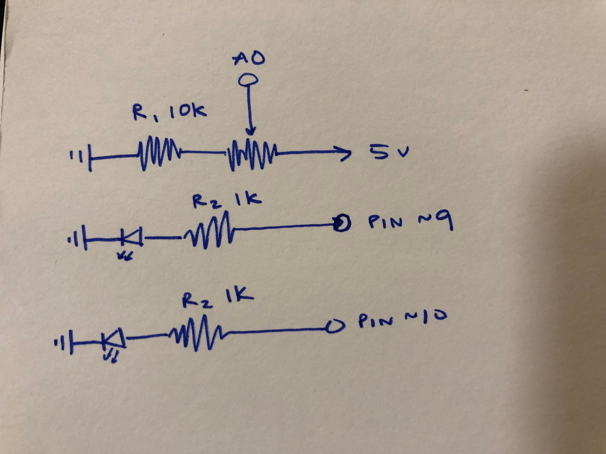

Assignment 3: Input Output!

This circuit dims an LED on and off based off of its read output from an LDR, and blinks another LED based off its readings. When the LDR reads low light, it will blink a separate LED, and when it reads high light, it won't.
LDR and LED schematic

For blue LEDs:
3.3V drop, 5V power source, 20 mA
V = 5-3.3 = 1.7 V
V = I x R = 1.7 = 0.02 x R
R = 1.7/0.02 = 85 Ω
I chose to use a 1K Ω resistor to limit the current flowing to the LED, much more than the 85 Ω requirement.
For the LDR:
5V = 200mA x R
5V / 0.2 A = R
R = 25 Ω
I chose to use a 10K Ω resistor, as we did in class examples, even though any resistor larger than 25 Ω would have sufficed.